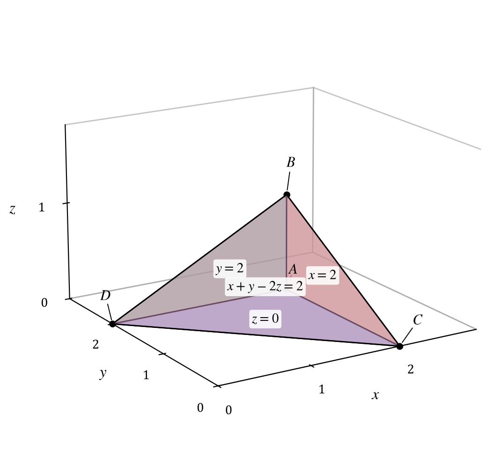
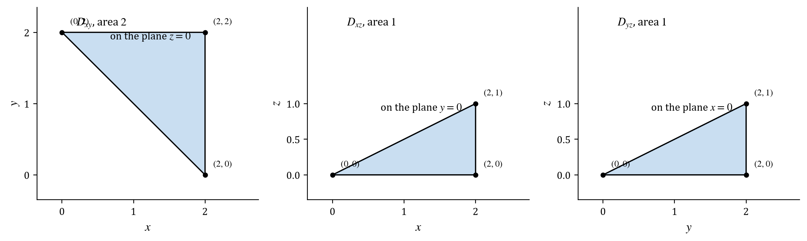
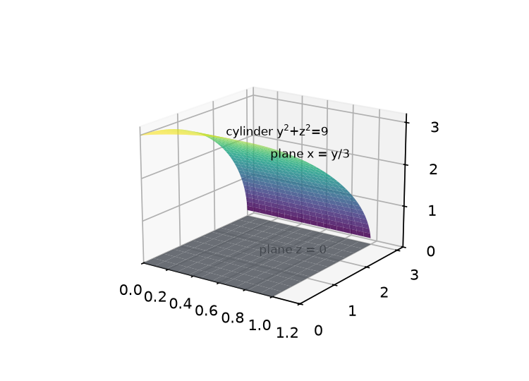
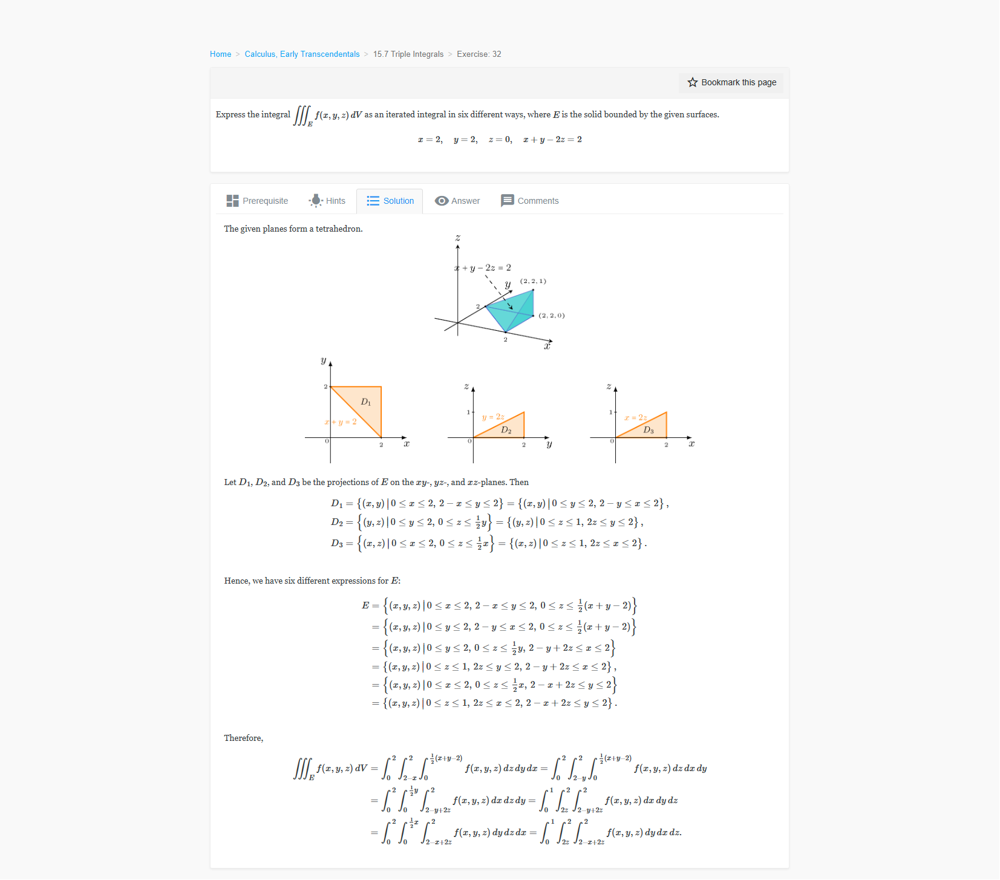

🏁 Result at a glance
📌 The DeepSeek run writes 24 solution pages, 79 figures, and 117 verification scripts. The Qwen run writes 24 solution pages, 23 figures, 75 step scripts, and 7 short NOTES.md files. All pages are self-contained HTML with KaTeX.
📋 The manual remarks do not give a token count or a cost. This chapter uses the transcript time, the file counts, and the five-dimension rubric as the measured values.
📈 Training losses
📌 One problem gives one parameters step. The loss is the rubric distance from a perfect 5. The sequence is not monotone: it starts at 0.232, reaches 0.040 at v16, then rises to 0.316 at the last pass.
📈 Chart 1 — Loss per training pass, in order. The last pass is the worst single loss of the run.
| # | Problem | Loss | Corr. | Parameters | Evaluator finding |
|---|---|---|---|---|---|
| 1 | 15.7.17 | 0.2320 | 3.0 | v0 → v1 | Answer 16π/3 reproduced. The claim of “less than one standard error” fails at 1.11 SE. |
| 2 | 15.7.20 | 0.3100 | 2.5 | v1 → v2 | A slice is called an annulus from the figure, not from the inequalities. |
| 3 | 15.7.21 | 0.2220 | 3.5 | v2 → v3 | Value 8/15 true. One false sentence about a triangle and a segment. |
| 4 | 15.7.22 | 0.0780 | 4.8 | v3 → v4 | V = 20π matches exactly. One sentence false. |
| 5 | 15.7.27 | 0.2740 | 2.5 | v4 → v5 | Region correct, one false sentence. Aborted, then resumed. |
| 6 | 15.7.28 | 0.1000 | 3.5 | v5 → v6 | Every number reproduces. One false statement survives all checks. |
| 7 | 15.7.29 | 0.1660 | 4.5 | v6 → v7 | Six limit sets and five exact values true. Presentation 3.2. |
| 8 | 15.7.30 | 0.0700 | 5.0 | v7 → v8 | No false sentence found. |
| 9 | 15.7.31 | 0.1100 | 4.5 | v8 → v9 | All six answers 128/15 agree within 7×10−15. |
| 10 | 15.7.39 | 0.0900 | 5.0 | v9 → v10 | Every statement true. 3,600 s tool timeout, resumed in 459 s. |
| 11 | 15.7.46 | 0.0700 | 5.0 | v10 → v11 | Cone derivation and answer true. Five scripts pass. |
| 12 | 15.7.49 | 0.0840 | 5.0 | v11 → v12 | All true. Presentation 2.8 from raw LaTeX in table cells. |
| 13 | 15.7.54 | 0.2640 | 3.0 | v12 → v13 | Derivation true. Several sentences carry unsupported values. |
| 14 | 15.8.14 | 0.0500 | 4.5 | v13 → v14 | Every printed number equals a script print. |
| 15 | 15.8.26 | 0.1680 | 3.8 | v14 → v15 | No baseline image in the session. Defects named against geometry alone. |
| 16 | 15.9.43 | 0.0400 | 5.0 | v15 → v16 | Every closed form recomputed by hand and by six scripts. |
| 17 | 15.9.45 | 0.3160 | 2.5 | v16 → v17 | Exact answer 136π/99 true. Four reasoning sentences false. Presentation 2.3. |
💡 The loss does not show the learning
📌 The prompt at v17 is much better at plotting than the prompt at v0. The loss at v17 is 0.316, the worst single value of the run. The reason is the rubric: one pass on one problem, and the final problem has four false sentences that cost more than the plot rules gain.
🔧 The learned plot rules are visible in the artifacts, not in the curve. This is the main design problem that the next plan targets.
✅ Test split at v17
📌 Seven unseen problems, one forward pass each, no feedback and no backward pass. Mean test loss is 0.2186 against a mean training loss of 0.1555.
📈 Chart 2 — Test loss per problem. Red is the one wrong answer; amber is the derived value.
| # | Problem | Loss | Canonical answer | Session answer | Math | Figures vs baseline |
|---|---|---|---|---|---|---|
| 1 | 15.7.18 | 0.314 | 27/8 = 3.375 | 27/8 = 3.375 | ✅ matches | Below. Labels on the wrong surfaces. |
| 2 | 15.7.23 | 0.490 | π/4 − 1/3 = 0.452065 | 1/3 = 0.333333 | ❌ wrong | Below. Readable solid, wrong region. |
| 3 | 15.7.32 | 0.056 | six orders, V = 2/3 | six orders, V = 2/3, f = 79/30 | ✅ matches | Below. Good labels and projections; one broken log axis. |
| 4 | 15.7.40 | 0.120 | m = 16/5, centre (5/14, 0, 2/7) | 16/5, (5/14, 0, 2/7) | ✅ matches | Below. Best section panel of the split. |
| 5 | 15.7.47 | 0.184 | setup only | setup plus evaluated values | ✅ matches, over-answered | Below. Grey labels on grey surfaces. |
| 6 | 15.7.50 | 0.120 | 11.2, (0.375, 2.209, 0.938), 59.794 | identical to 3 dp | ✅ matches | Below. Best-labelled solid. |
| 7 | 15.7.55 | 0.246 * | 4√6π/45 = 0.684027 | 8π/(15√6) = 0.684027 | ✅ matches | Below. Arrowheads, no equation label. |
📌 * No loss.json for this resumed test session. The value is derived from the recorded rubric with the plugin formula. The rubric weights are 0.30 correctness, 0.20 clarity, 0.20 pedagogy, 0.20 verification, 0.10 presentation.
❌ The one real math failure: 15.7.23
📌 The canonical answer is π/4 − 1/3, a wedge cut from a cylinder by the planes y = x and x = 1. The session gives 1/3, the mirror solid under y ≥ x. The session also passes 33 checks on that answer, because its verification layer tests the same wrong region.
💡 A test pass has no feedback, so nothing corrects the region. This failure is a property of the current protocol, not a random model error.
🐢 Transfer to Qwen3.8-27B
📌 Qwen3.8-27B ran the v17-derived instruction on all 24 problems. It published 24 pages, and every page passed tools/check.py. The gate checks structure, math delimiters, and embedded figures. It does not check whether the plot style is good.
| Item | DeepSeek Flash | Qwen3.8-27B | Note |
|---|---|---|---|
| 📄 Solution pages | 24 | 24 | DeepSeek writes report.html; Qwen writes solution.html. |
| 📈 Figures | 79 | 23 | DeepSeek draws 2–6 per problem; Qwen draws at most 1. |
| 🧮 Verification scripts | 117 | 75 | DeepSeek writes part<i>_verify.py; Qwen writes part<i>_step<j>.py. |
| 📈 Figure scripts | 78 | 23 | One script for each figure. DeepSeek 15.7.40 draws four figures from three scripts. |
| 📋 Step notes | 272 | 7 | steps/*.md for DeepSeek; NOTES.md for Qwen. |
| ⚡ Decode speed | 200 tokens/s | 40 tokens/s | From the manual remarks. |
| ⏱ Time per problem (RSI off) | < 5 min | > 15 min | Average, from the manual remarks. |
📈 The two transfer examples
| Problem | Learned element | DeepSeek at v17 | Qwen3.8-27B |
|---|---|---|---|
| 15.7.32 | Labelled simple 3D geometry | ✅ Tetrahedron with vertex letters A–D and boxed plane labels. | ❌ One 3D panel, clipped low-contrast labels, no vertices. |
| 15.7.32 | Labelled 2D projections | ✅ Three projection panels with corners and base areas. | ❌ No projection panel. |
| 15.7.18 | Complex 3D perspective | ⚠ One 3D panel. Two labels land on the wrong surface. | ❌ One 3D panel. The plane and cylinder labels collide; no projection. |
| 15.7.18 | Perspective illusion | ❌ Not adjusted. | ❌ Not considered. Labels overlap. |
📌 The Qwen run also reported a 24/24 PASS result of its own. The independent re-run for the session summary reproduced it.
⏱ Time and speed
📌 The DeepSeek session ran for 16 h 57 m elapsed. It spent 14 h 07 m inside turns, a duty cycle of 83 %, and 2 h 50 m in operator pauses. The three longest steps are blocking plugin calls: 5,160 s, 5,702 s, and 8,142 s. They hold 37 % of the counted step time.
🐢 The Qwen run took 5 h 44 m 31 s against a 4 h budget, an overrun of 43.5 %. Only 3 h 31 m of that was inside a turn; 2 h 13 m was idle between turns while the operator typed “Continue”.
⚡ Chart 3 — Decode speed from the manual remarks.
⏱ Chart 4 — Wall clock and active time. The Qwen bar also shows the 4 h budget.
🐢 Chart 5 — Qwen per-problem seconds, for the 15 problems that reported a number. The line is the 600 s target. The median is 1,200 s, twice the target.
📌 The Qwen value for 15.8.26 appears as 2,100 s and 4,639 s in two sources. The chart uses the higher figure that the lead carried. Problems that a worker finished without reporting a number are not in the chart.
⚠ Failure and recovery records
| Event | Run | Effect | Recovery |
|---|---|---|---|
| ❌ Wrong region | DeepSeek test 15.7.23 | Answer 1/3 instead of π/4 − 1/3. 33 internal checks pass on the wrong region. | ⚠ No recovery. A test pass has no feedback. |
| ⏱ Tool timeout | DeepSeek training 15.7.39, 15.9.43 | Two passes hit the 3,600 s tool ceiling. | ✅ mcma_resume kept the finished stages. |
| 🔌 Provider stall | DeepSeek training | Two idle-stream retries and a 135-minute stall on one list_agents step. | ✅ The stream retried and the pass continued. |
| 🐢 Worker death | Qwen transfer | 13 “ran out of room” notices and 5 “stopped before finished” notices. | ✅ The lead shrank the unit to one problem and re-dispatched. |
| 📦 Context overflow | Qwen transfer | Turns 19 and 20 ended with CONTEXT_WINDOW_EXCEEDED. | ✅ Restarted and finished the last three problems in one 37-minute turn. |
| 🗑 Cleanup debt | DeepSeek training | 25 code/.venv trees (~5.35 GB), .tmp/, and __pycache__ left in the workspace. | ✅ Two operator prompts; final footprint 49 MB. |
📈 Visual check
📌 These figures come from the raw folders. The first three show what the training learned and where it still fails. The last three show the same problems after transfer. Click a figure to zoom.






📌 Bottom line
- 🤖 Framework. The MCMA plugin trains an agent with forward, feedback, backward, validate, and test passes. The training loop ran end to end on 17 problems.
- 📈 Learning. The instruction grew from 272 to 11,952 characters in the
prompt.extrafield. It learned a simple plot recipe and recorded it in the figure law. - 💡 Loss. The rubric loss does not track the plot learning. The final pass is the worst single loss of the run.
- ✅ Math. DeepSeek solves 6 of 7 test problems. Qwen passes a structural gate on 24 of 24. Neither claim covers plot quality.
- ❌ Transfer. The learned plot style does not appear in the Qwen pages. Two of two examples fail.
- ⏱ Tutor verdict. DeepSeek Flash at 200 tokens/s is acceptable, at under 5 minutes per problem with RSI off. Qwen3.8-27B at 40 tokens/s is not, at over 15 minutes per problem.
- 🔍 Next check. Make the RSI learn the plot recipe in an explicit, measurable way. See Future Plans.